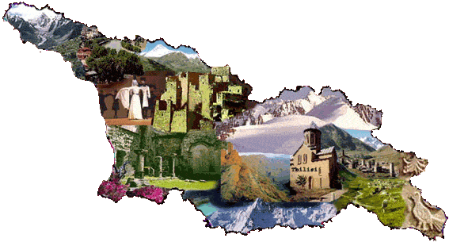
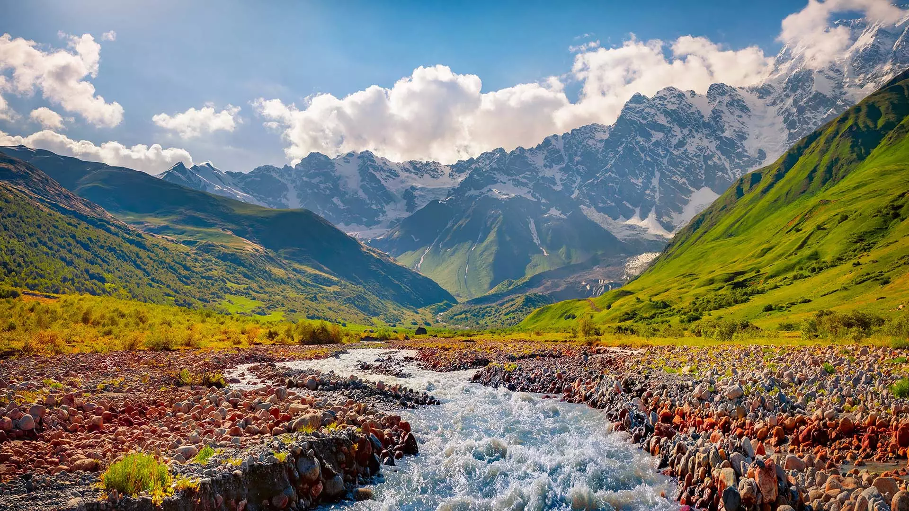
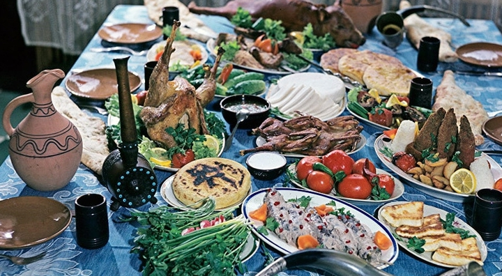

საქართველო

საქართველო
საქართველო მდებარეობს სამხრეთ კავკასიის რეგიონში, რომელიც ცნობილია თავისი მდიდარი კულტურით, ისტორიული მემკვიდრეობით და ბუნებრივი სილამაზით. ქვეყნის დედაქალაქი თბილისია, რომელიც არის კულტურული და ეკონომიკური ცენტრი. საქართველო ცნობილია თავისი ღვინის წარმოებით, ტრადიციული სამზარეულოთი და სტუმართმოყვარეობით.

კულტურა
საქართველო მდიდარია კულტურული მემკვიდრეობით, რომელიც მოიცავს ტრადიციულ მუსიკას, ცეკვებს, ხელოვნებას და ლიტერატურას. ქართული ენა და ანბანი უნიკალურია და წარმოადგენს მნიშვნელოვან ნაწილს ქვეყნის იდენტობისа. საქართველო ასევე ცნობილია თავისი რელიგიური მრავალფეროვნებით, სად მომხდარი ეკლესიები და მონასტრები მდებარეობს.
